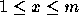
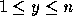
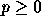

| Simulation Wizardry |
Simulation is an important application area in computer science involving the development of computer models to provide insight into real-world events. There are many kinds of simulation including (and certainly not limited to) discrete event simulation and clock-driven simulation. Simulation often involves approximating observed behavior in order to develop a practical approach.
This problem involves the simulation of a simplistic pinball machine. In a pinball machine, a steel ball rolls around a surface, hitting various objects (bumpers) and accruing points until the ball ``disappears'' from the surface.
You are to write a program that simulates an idealized pinball machine.
This machine has a flat surface that has some obstacles (bumpers and
walls). The surface is modeled as an  grid with the origin
in the lower-left corner. Each bumper occupies a grid point. The grid
positions on the edge of the surface are walls. Balls are shot (appear)
one at a time on the grid, with an initial position, direction, and
lifetime. In this simulation, all positions are integral, and the
ball's direction is one of: up, down, left, or right. The ball bounces
around the grid, hitting bumpers (which accumulates points) and walls
(which does not add any points). The number of points accumulated by
hitting a given bumper is the value of that bumper. The speed
of all balls is one grid space per timestep. A ball ``hits'' an
obstacle during a timestep when it would otherwise move on top of the
bumper or wall grid point. A hit causes the ball to ``rebound'' by
turning right (clockwise) 90 degrees, without ever moving on top of the
obstacle and without changing position (only the direction changes as a
result of a rebound). Note that by this definition sliding along a wall
does not constitute ``hitting'' that wall.
grid with the origin
in the lower-left corner. Each bumper occupies a grid point. The grid
positions on the edge of the surface are walls. Balls are shot (appear)
one at a time on the grid, with an initial position, direction, and
lifetime. In this simulation, all positions are integral, and the
ball's direction is one of: up, down, left, or right. The ball bounces
around the grid, hitting bumpers (which accumulates points) and walls
(which does not add any points). The number of points accumulated by
hitting a given bumper is the value of that bumper. The speed
of all balls is one grid space per timestep. A ball ``hits'' an
obstacle during a timestep when it would otherwise move on top of the
bumper or wall grid point. A hit causes the ball to ``rebound'' by
turning right (clockwise) 90 degrees, without ever moving on top of the
obstacle and without changing position (only the direction changes as a
result of a rebound). Note that by this definition sliding along a wall
does not constitute ``hitting'' that wall.
A ball's lifetime indicates how many time units the ball will live before disappearing from the surface. The ball uses one unit of lifetime for each grid step it moves. It also uses some units of lifetime for each bumper or wall that it hits. The lifetime used by a hit is the cost of that bumper or wall. As long as the ball has a positive lifetime when it hits a bumper, it obtains the full score for that bumper. Note that a ball with lifetime one will ``die'' during its next move and thus cannot obtain points for hitting a bumper during this last move. Once the lifetime is non-positive (less than or equal to zero), the ball disappears and the game continues with the next ball.
Your program should simulate one game of pinball. There are several input lines that describe the game. The first line gives integers m and n, separated by a space. This describes a cartesian grid where  and  on which the game is ``played''. It will be the case that 2 < m < 51 and 2 < n < 51. The next line gives the integer cost for hitting a wall. The next line gives the number of bumpers, an integer  . The next p lines give the x position, y position, value, and cost, of each bumper, as four integers per line separated by space(s). The x and y positions of all bumpers will be in the range of the grid. The value and cost may be any integer (i.e., they may be negative; a negative cost adds lifetime to a ball that hits the bumper). The remaining lines of the file represent the balls. Each line represents one ball, and contains four integers separated by space(s): the initial x and y position of the ball, the direction of movement, and its lifetime. The position will be in range (and not on top of any bumper or wall). The direction will be one of four values: 0 for increasing x (right), 1 for increasing y (up), 2 for decreasing x (left), and 3 for decreasing y (down). The lifetime will be some positive integer.
There should be one line of output for each ball giving an integer number of points accumulated by that ball in the same order as the balls appear in the input. After all of these lines, the total points for all balls should be printed.
4 4 0 2 2 2 1 0 3 3 1 0 2 3 1 1 2 3 1 2 2 3 1 3 2 3 1 4 2 3 1 5
0 0 1 2 2 5